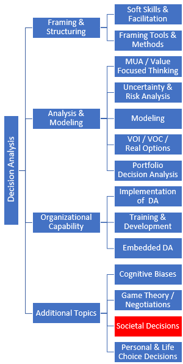

Click on any block to access a topic

|
Societal Decisions: Societal decisions are everywhere and affect everyone. From from health care and education to public safety and the environment, it takes little more than a flip through a local newspaper to find examples of decisions that impact society. What makes Societal Decisions unique? Societal decisions differ from business and personal decision problems in several ways, including:
- Decentralized decision makers and decision making processes
- Many stakeholders with varying degrees of decision-making authority
- Multiple and often conflicting values of varying importance to different stakeholders
- Stakeholder engagement processes are critical and may be even more important to success than traditional decision analysis steps
How can decision professionals help? Decision professionals use the principles of decision quality to help decision-makers and stakeholders identify areas of agreement and disagreement, create and analyze novel alternatives, and build consensus among stakeholders.
Best practice examples:The links below highlight examples and best practices where decision professionals have added significant value to societal decisions.

|
Using decision analysis to inform municipal water management decisions in the Napa Valley
|
| |
|

|
A multi-attribute decision analysis of options for decommissioning California’s offshore oil platforms. |
|
If you have any questions, comments, or suggestions for additional examples, please send us an email.
All Library Resources for this topic
|